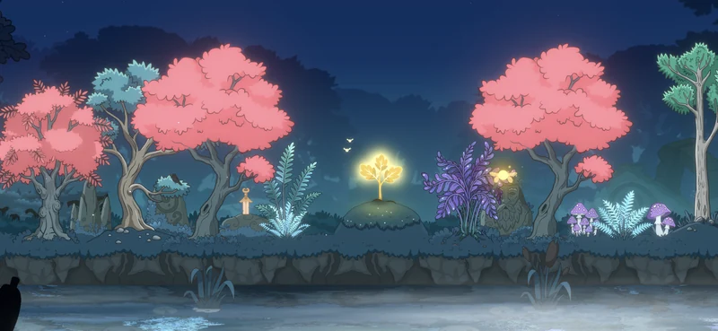

DevLog #5
How Weather Made Lumen Grove Feel Truly Alive
Why do games need weather? A look at atmosphere, immersion and the rhythm of a living world.

Why do games need weather at all? Especially if it does not add anything to the gameplay and does not affect the game rules in any way. At first glance, it seems like exactly the kind of feature that should be cut from the scope first, especially during early development.
But this is where context matters, because it defines whether a feature gets cut or receives the green light. The thing is, gameplay alone is often no longer enough. Players want stories even in match-3 games, atmosphere in hidden object games — in other words, depth in places where historically there used to be almost none.
And when we talk about cozy games, which is exactly what Lumen Grove is, the priority of features like this grows significantly. Weather is primarily about atmosphere. It creates mood, adds a sense of reality, and makes it easier to believe in this imaginary fairytale world. That, in turn, can lead to the highly desired feeling of flow.
So in this context, anything that supports atmosphere becomes a high-priority candidate, not the other way around.
Moving forward, in order to make the right decision, it is worth asking a few questions and establishing a foundation to build on later. Even fairytale worlds live by their own rules, and those rules should not be broken without a good reason.
For me, these were questions like: how realistic should the weather be? What is allowed, and what is not? Is the weather connected to in-game events? And most importantly — what should the player get from this feature?
I decided that, in addition to atmosphere and visuals, weather should bring a sense of variety and change to the life cycle of the world. During one play session, the player can see one or two weather changes, so the “internal” time does not feel like it is moving too fast. And if the player opens the game several times during the day, they are guaranteed to see different states of the grove. It could be rain, mist over the river, or even auroras with a touch of gentle snow.
At this stage, this is my favorite feature in the game. This small detail, at first glance, added the tiny missing drop that instantly raised the level of immersion, improving the overall player experience and making the world feel more layered.
Follow the link to visit Lumen Grove and step into its fairytale world.